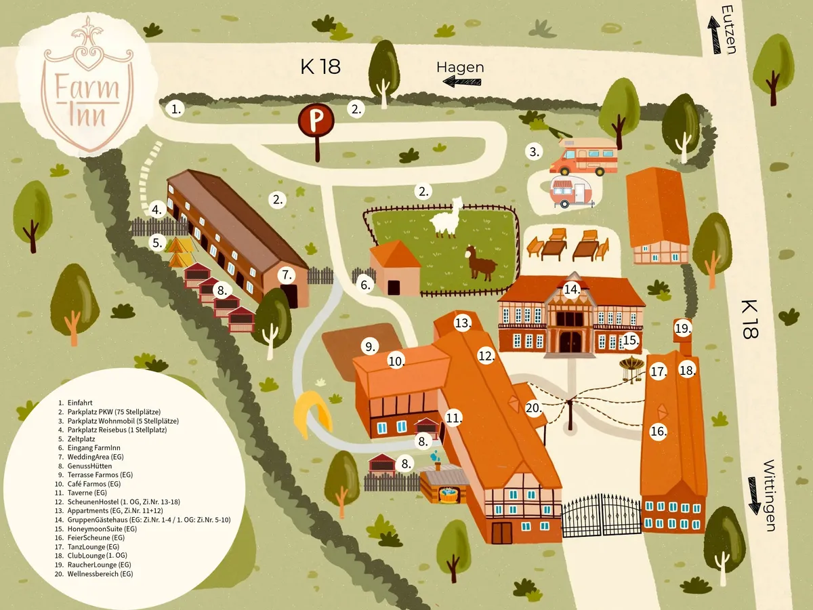

FarmInn – Kakerbeck bei Wittingen
Wir feiern unsere Hochzeit auf dem FarmInn in Kakerbeck bei Wittingen. Der liebevoll restaurierte Hof verbindet rustikalen Scheunencharme mit gemütlichem Komfort – ein Ort, an dem man sich vom ersten Moment an wohlfühlt.
An unserem Wochenende gehört das gesamte Gelände unseren Gästen. Ihr könnt also in Ruhe ankommen, über den Hof schlendern und die Zeit miteinander genießen.
Adresse: Kakerbeck 9, 29378 Wittingen
Hier wird geheiratet. Die TrauScheune ist ein restaurierter Bullenstall mit rustikalem Flair und bietet Platz für bis zu 120 Stühle. Die Atmosphäre ist persönlich und ganz nah an der Natur.
Das Herzstück des Hofs: Hier wird gegessen, angestoßen und gefeiert. Die Scheune bietet Platz für bis zu 250 Personen und verbindet rustikalen Charme mit moderner Ausstattung. Sie ist beheizt, sodass es auch an kühleren Abenden gemütlich bleibt.
Direkt an die FeierScheune angeschlossen, mit Platz für bis zu 150 Gäste. Hier wird getanzt, bis die Füße nicht mehr wollen. Eine große Bühne, eine eigene Bar und Lounge-Möbel sorgen für die richtige Stimmung.
Eine Etage höher finden alle, die eine ruhige Runde suchen, einen Rückzugsort: mit Bar, Sitzecken und Kamin, dazu Billard, Tischtennis und Spielekonsolen. Ideal zum Quatschen, Spielen und Ausruhen.
Ein wettergeschützter Bereich mit Bar, gemütlichen Couches und einem Holzofen, für eine entspannte Pause an der frischen Luft. Zutritt ab 18 Jahren.
Der Innenhof ist weitläufig und einladend. Hier lässt es sich zwischen den Programmpunkten wunderbar draußen plaudern und entspannen.
Der Garten ist eine große Grünanlage zum Spazieren, Durchatmen und für Fotos vor natürlicher Kulisse.

Samstag ist unser großer Tag mit Trauung und Feier.
Freitag und Sonntag sind freiwillig. Ihr könnt auch nur für den Samstag kommen oder so lange bleiben, wie ihr möchtet.